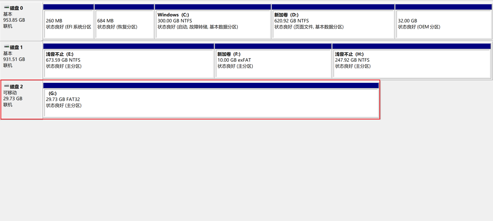
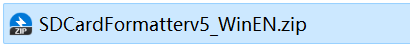
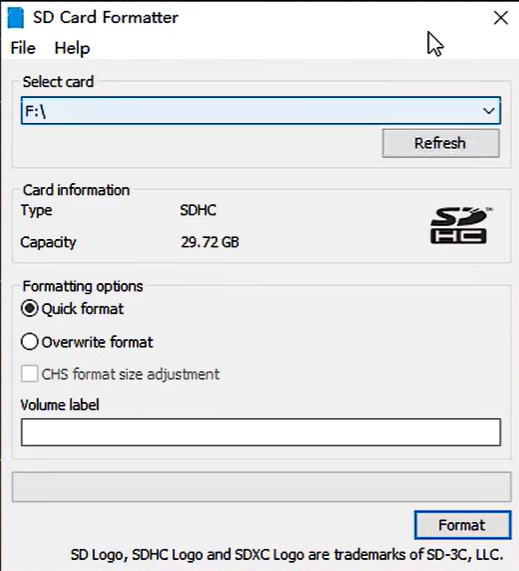
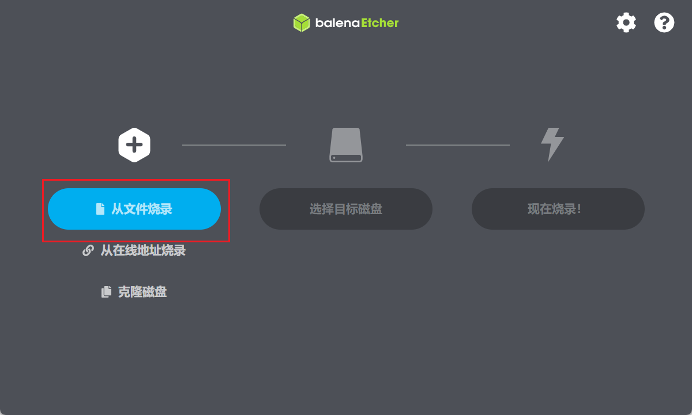
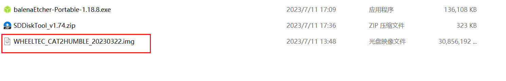
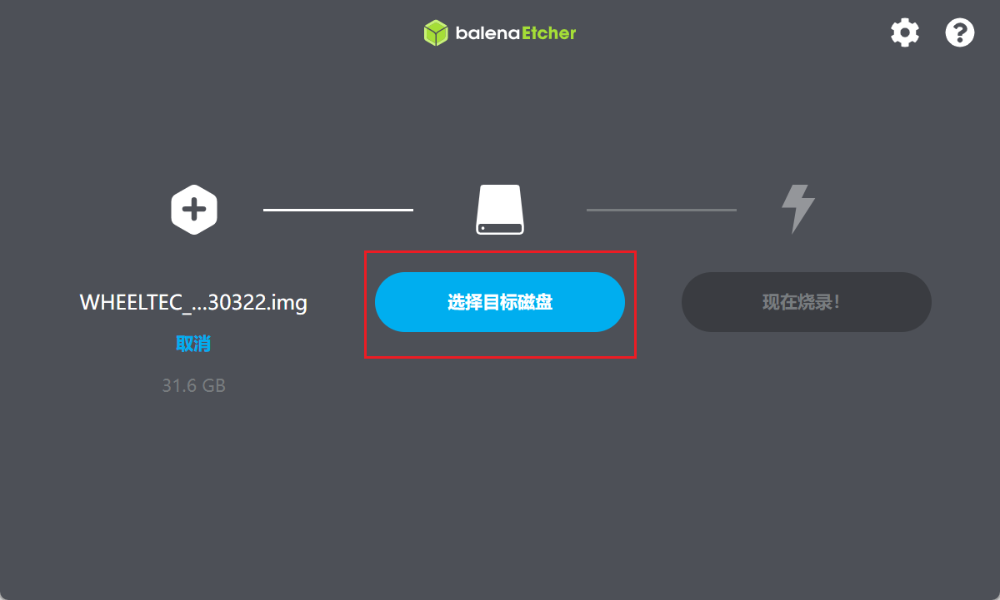
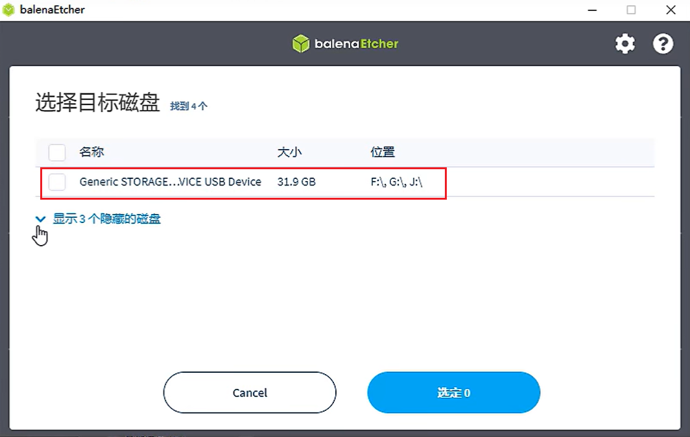
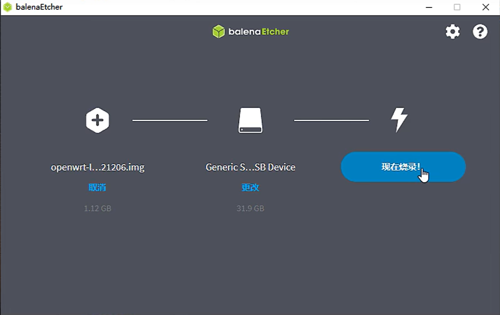

<!DOCTYPE lake>
<ol list="ubde04abc"><li data-lake-id="ufcf35570" fid="uc3f0b855" id="ufcf35570"><span data-lake-id="uddec1c16" id="uddec1c16">先将sd卡插入电脑,创建分区</span></li></ol><p data-lake-id="u77861831" id="u77861831"></p><ol list="u002f373b" start="2"><li data-lake-id="u902c4066" fid="ufd4f1c46" id="u902c4066"><span data-lake-id="u53a7963f" id="u53a7963f">格式化sd卡</span></li></ol><p data-lake-id="u7e43cf9d" id="u7e43cf9d" style="text-indent: 2em"><span data-lake-id="uf9de47e8" id="uf9de47e8">解压下面的软件安装</span></p><p data-lake-id="u362b4d10" id="u362b4d10" style="text-indent: 2em"></p><p data-lake-id="u840bc1d3" id="u840bc1d3" style="text-indent: 2em"><span data-lake-id="u4a4792b4" id="u4a4792b4">打开软件,选择sd卡格式化</span></p><p data-lake-id="u26c50d93" id="u26c50d93" style="text-indent: 2em"></p><ol list="u002f373b" start="3"><li data-lake-id="u7502acec" fid="ufd4f1c46" id="u7502acec"><span data-lake-id="u247482a9" id="u247482a9">烧录镜像</span></li></ol><p data-lake-id="u4a1ccc72" id="u4a1ccc72" style="text-indent: 2em"><span data-lake-id="ub2ce198d" id="ub2ce198d">打开</span><code data-lake-id="u9b077d25" id="u9b077d25"><span data-lake-id="uc3dad7de" id="uc3dad7de">balenaEtcher-Portable-1.18.8.exe</span></code></p><p data-lake-id="u5dbb76b6" id="u5dbb76b6" style="text-indent: 2em"></p><p data-lake-id="u3b30753e" id="u3b30753e" style="text-indent: 2em"><span data-lake-id="u03b796d7" id="u03b796d7">选择烧录镜像</span></p><p data-lake-id="u3360da88" id="u3360da88" style="text-indent: 2em"></p><p data-lake-id="u0c5552a1" id="u0c5552a1" style="text-indent: 2em"><span data-lake-id="u09d83f23" id="u09d83f23">选择目标磁盘</span></p><p data-lake-id="u86766447" id="u86766447" style="text-indent: 2em"></p><p data-lake-id="u82fb6a09" id="u82fb6a09" style="text-indent: 2em"><span data-lake-id="ua4239184" id="ua4239184">选择32G的SD卡盘符</span></p><p data-lake-id="u22fa9b73" id="u22fa9b73" style="text-indent: 2em"></p><p data-lake-id="u465892ff" id="u465892ff" style="text-indent: 2em"><span data-lake-id="u36970c8e" id="u36970c8e">选择现在烧录</span></p><p data-lake-id="ub9cd2d82" id="ub9cd2d82" style="text-indent: 2em"></p><p data-lake-id="uebc366ae" id="uebc366ae" style="text-indent: 2em"><span data-lake-id="u8c4ad451" id="u8c4ad451">等待烧录完成,插上鲁班猫即可</span></p>